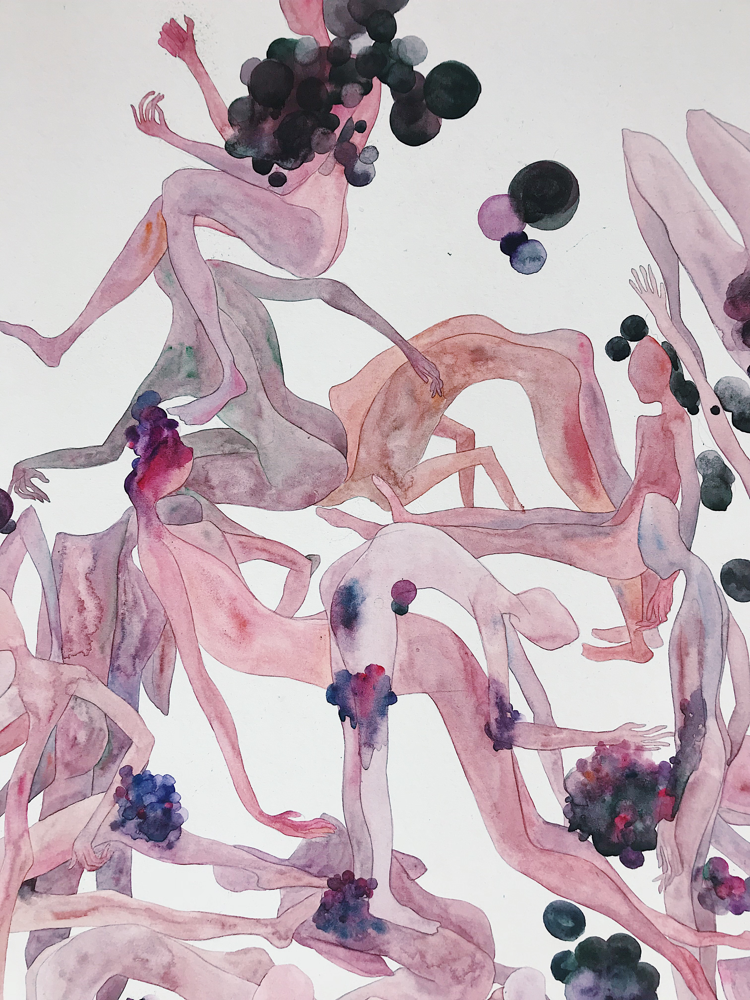

-
.JPG)
《葡萄成熟时（局部1））》
details of ‘The moment of grape ripening’ | 80_110cm | watercolor on paper | 2018 -
.JPG)
《葡萄成熟时（局部2）》
details of ‘The moment of grape ripening’ | 80_110cm | watercolor on paper | 2018 -

《葡萄成熟时（局部3）》
details of ‘The moment of grape ripening’ | 80_110cm | watercolor on paper | 2018 -
.JPG)
《葡萄成熟时（局部4）》
details of ‘The moment of grape ripening’ | 80_110cm | watercolor on paper | 2018
-
.JPG)
《等光走（局部1）》
details of 'wait for the light to do away' | 80_110cm | watercolor on paper | 2018 -
.JPG)
《等光走（局部2）》
details of 'wait for the light to do away' | 80_110cm | watercolor on paper | 2018 -
.JPG)
《等光走（局部3）》
details of 'wait for the light to do away' | 80_110cm | watercolor on paper | 2018 -
.JPG)
《等光走（局部4）》
details of 'wait for the light to do away' | 80_110cm | watercolor on paper | 2018
At the center of «The Teacher» stands a teacher figure, which is controlled by a student – performed by Soya Arakawa – laying on the floor, using his feet to control the figure by employing some quite formidable effort. The teacher is thus placed in a didactic frenzy, a kind of hectic dance that sometimes seems monstrous, sometimes seductive. His lessons are illustrated by large diagrams that fall to the floor in short intervals, in order to reveal something new over and over again. What the teacher presents sounds impressive and true but in fact, contradicts itself. The text, which is closely interwoven with Tobias Textor’s rapid percussion, consists of aphorisms that Scherer was partly told by authorities and partly wrote herself. Together, the texts analyse and demonstrate the rhetorical blueprint of so-called wisdoms and their manipulative potential.
At the center of «The Teacher» stands a teacher figure, which is controlled by a student – performed by Soya Arakawa – laying on the floor, using his feet to control the figure by employing some quite formidable effort. The teacher is thus placed in a didactic frenzy, a kind of hectic dance that sometimes seems monstrous, sometimes seductive. His lessons are illustrated by large diagrams that fall to the floor in short intervals, in order to reveal something new over and over again. What the teacher presents sounds impressive and true but in fact, contradicts itself. The text, which is closely interwoven with Tobias Textor’s rapid percussion, consists of aphorisms that Scherer was partly told by authorities and partly wrote herself. Together, the texts analyse and demonstrate the rhetorical blueprint of so-called wisdoms and their manipulative potential.